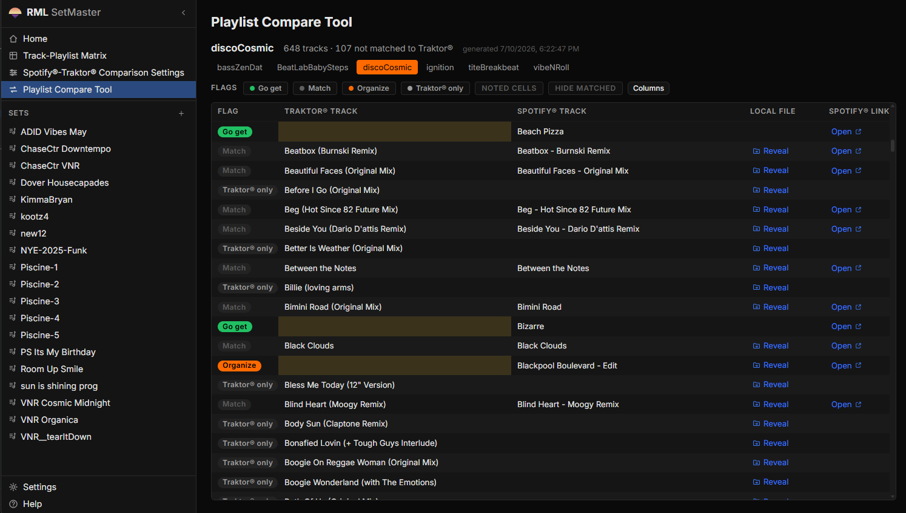
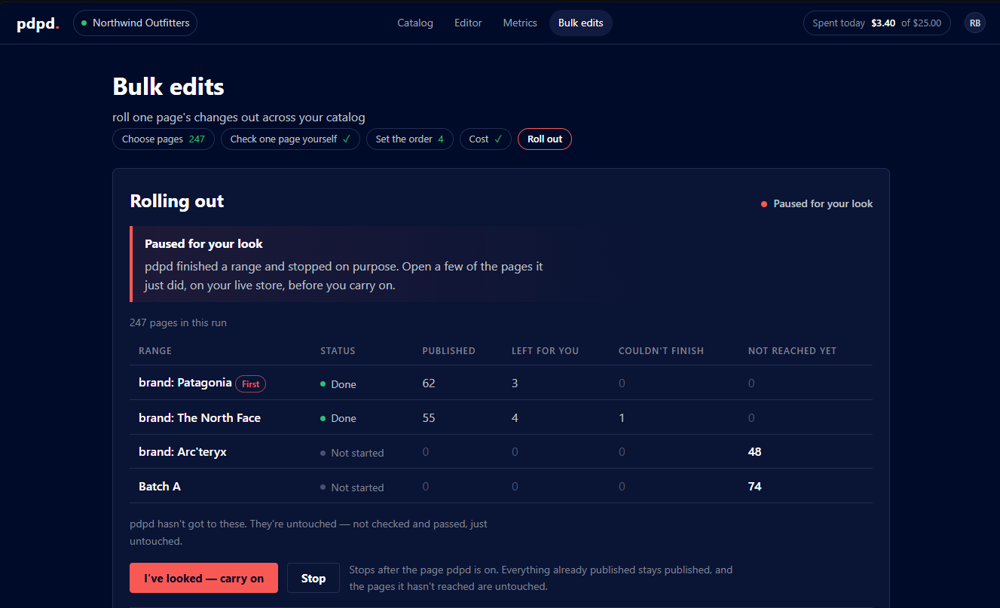
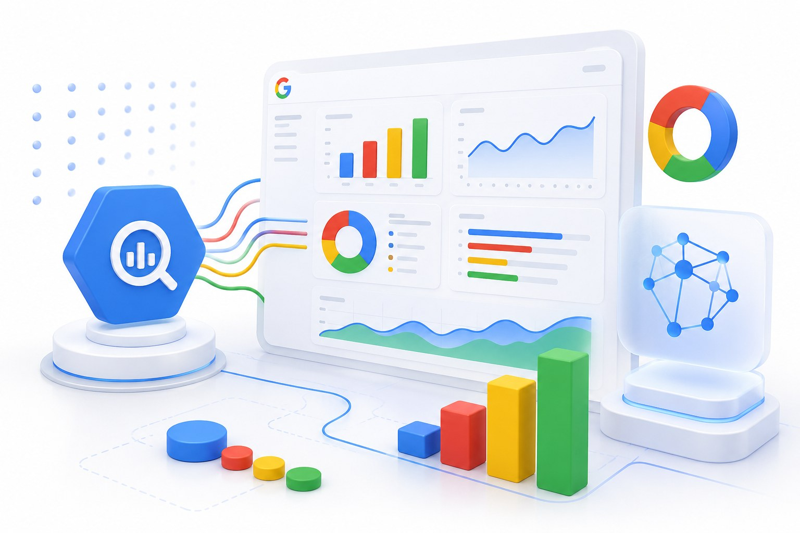
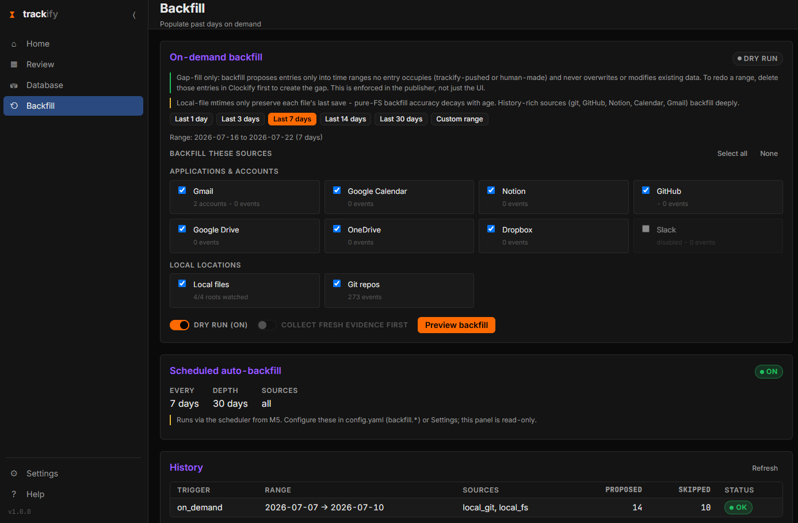

Selected AI applications & systems
Software that runs
Client platforms, in-house tools, and builds in flight — every one of them real software, not a proposal.

RML SetMaster 3
An offline, cross-platform DJ analytics and set-preparation application — TypeScript/React over a Python analysis engine, shipping double-clickable installers for Windows and macOS with no terminal required. Reads Traktor’s collection.nml XML strictly read-only, reconciles it against exported Spotify playlists through years of accumulated name-normalization and matching heuristics, and adds key/BPM analysis, compound catalog filtering, and a structured set editor. Now at v3.0.3 after three issue-driven fix rounds; it replaces an Excel/VBA prototype used professionally for years.
E-commerce Intelligence Platform — Tromml Inc.
Built and shipped an e-commerce intelligence platform alongside a senior AI Engineer/CTO, using AI-accelerated development throughout. Python, dbt, PostgreSQL, BigQuery, and Looker Studio behind an interface that lets business users query complex operational data through natural-language interaction instead of filing analyst requests. Reached $20k MRR as a subscription product.

Notion–GitHub AI Dev Command Center
A bespoke command center for AI-accelerated development: a skills-based planning, project-management, and AI-supervision suite built on a Python engine that wires Claude Code, OpenAI Codex, GitHub, Notion, and BigQuery into a single pipeline. Every agent action is planned against a tracked task, logged, and reviewable — transparent human + agent software development at blistering speed, with an audit trail rather than a black box.

The $30M Data Backbone — Auto SOSS Inc. / Shock Surplus
The pricing, inventory, forecasting, and operational automation systems that carried an eight-figure e-commerce brand from $300K to $30M in annual revenue. Written in Python and SQL, designed and owned end to end while serving as COO — the engineering and the P&L were the same job.

pdpd
An AI e-commerce frontend tool that fixes, generates, A/B tests, and version-controls product description page catalogs running to millions of pages. Python and FastAPI with a per-instance Postgres cluster and cloud-ready storage, model, and secrets seams. In alpha, built from a full written specification.

BQL Analytics Provisioner
Provisions a standardized, layered BigQuery analytics environment — raw, staging, clean, analysis — and wires Looker Studio on top, in minutes instead of a week of console clicks. Python CLI, built so the client owns the Google Cloud project and can revoke consultant access at any time.

Time-Trackify
An agent that reconstructs a workday from the evidence it already left behind — local repositories, GitHub, Notion, calendar, and mail — matches each session to a real project, and pushes billable entries to Clockify with provenance attached. Python, local-first, privacy-scoped by design.